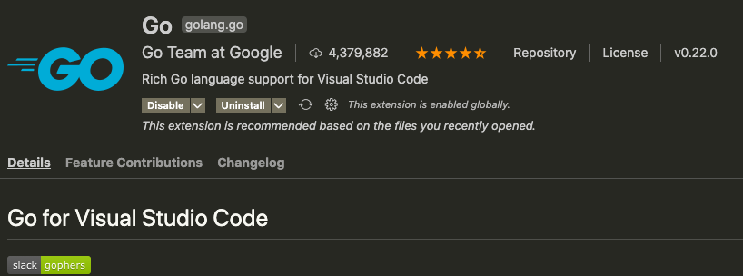
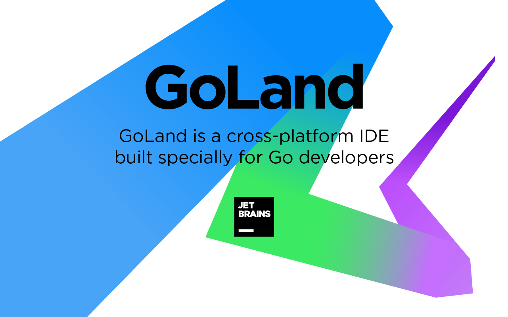
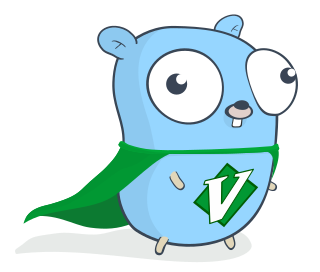
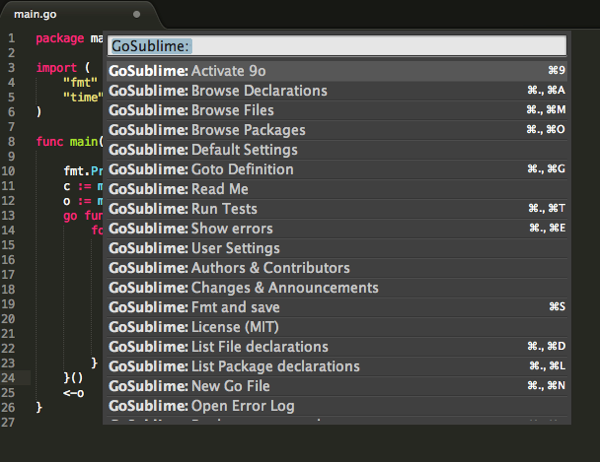
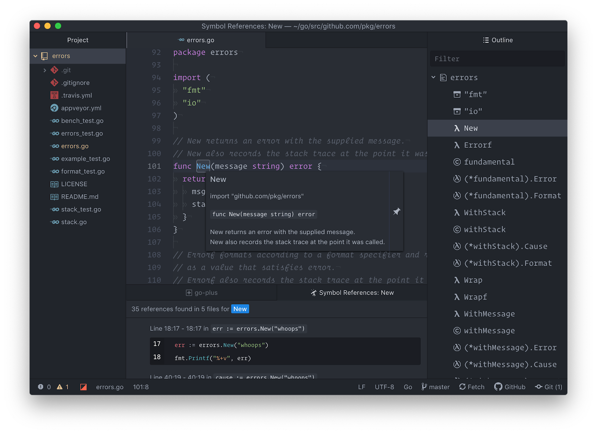
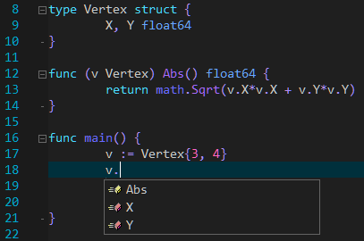

Go 开发者 Top 6 IDE：你知道几个，又用哪个？
声明：这里的 IDE 包括普通的文本编辑器和真正的 IDE。或者应该叫做开发工具。
这个 Top 排行，没有直接数据支持，凭直觉的，哈哈哈哈哈。（其实也结合了部分网上资料，比如 2019 年官方的调查结果）。
1、VSCode
这是微软出品的，超级棒的文本编辑器。我出过 VSCode 系列相关教程 ，目前我主要使用 VSCode 进行开发。VSCode 本身不是专门针对 Go 的编辑器，所以需要通过插件来支持 Go，这就是 Go for Visual Studio Code 插件，前些天更新到了 v0.22.0，默认启用了 gopls。关于什么是 gopls，可以参考我写的这篇文章 。
注意，目前该插件是 Go Team 维护的。官方支持，值得拥有！

有了 gopls，VSCode 写 Go 代码的感觉特别棒，我认为一定程度上可以媲美 GoLand，而且它是开源免费的呢。
2、GoLand
JetBrains 以 Intellij IDEA 和针对特定语言的 IDE 而闻名。而 GoLand 是为 Go 开发者提供的 JetBrains 解决方案。
GoLand 是一个专门为 Go 开发者构建的跨平台 IDE。它是一个商业 IDE，也就是要钱的，不过正因为要钱，它的功能特别强大。

比如有动态错误检测和修复建议、一步撤销重构、智能代码完成、未使用代码检测和文档提示等。
此外，它还具有强大的调试功能，用户友好的代码导航，以及对 Git、GitHub 和 Mercurial 开箱即用的支持。
目前个人用户第一年 89 美金，后续续费会便宜些。
可能很多人抱怨贵，但 JetBrains 还是很不错的，如果你有开源项目，可以申请免费 Licence；如果你是学生，也可以申请。
3、LiteIDE
有些人可能不知道这款 IDE，这是国人开发的，专门为 Go 语言打造的 IDE。在 2012 年我刚接触 Go 语言时，这款 IDE 就跟着出现了。
官方的介绍：这是一款简单，开源，跨平台的 Go IDE，主页地址：http://liteide.org。
因为 LiteIDE 是为 Go 设计的，所以它为开发者提供了许多开箱即用的有用特性。其中包括可配置的构建命令、高级代码编辑器、代码管理、gdb 和 Delve 调试器支持、自动完成和 WordApi 主题化、基于 MIME 类型的系统等等。
作者是七叶，更新很积极，应该拥有一批忠实的用户。
4、Vim
作为编辑器之神，自然会支持 Go，这是通过 vim-go 这个插件实现的。

vim-go 插件是免费的，易于安装，维护良好，经常在 Github 上更新。安装后，vim-go 将为你的 Vim 文本编辑器配备 Go 包编译、折叠和语法高亮显示、集成的 delve 支持，以及在用 Golang 编写应用程序时可能需要的其他功能，Vim 可扩展性特别强。
此外，作者维护了较好的文档 ，有问题可以得到较好的支持。
5、Sublime Text
曾经 Sublime Text 风光无限，自从 VSCode 出来后，受到了极大的冲击。如果你是 Sublime Text 爱好者，通过 GoSublime 插件可以进行 Go 开发。

值得注意的是，你可能需要一些额外的插件来充分发挥 Sublime Text 作为 Go IDE 的作用。比如 Golang Build package ，它是用于 Go Build 系统集成的官方 Sublime Text package。
6、Atom
这是 GitHub 出品的。它是一个轻量级框架，通过大量插件，来丰富其功能。
如果你是 Atom 的爱好者，可以通过 Go-plus 插件来支持 Go 开发。

该插件提供了构建流程、lints、vet 和覆盖测试等工具。此外还有自动完成、格式化、测试和文档功能。
总结
除了上面介绍的 6 款（它们都是跨平台的），在这篇文章 看到了另外一款：Zeus IDE 。这个国内应该很多人都没听过，这是 Windows 上的一款 IDE，Windows 的用户可以试试。

注意，Eclipse 上的 Go 插件已经不维护了，所以大家别用 Eclipse 开发 Go 了。
最后问一句，有人使用 Emacs 开发 Go 吗？